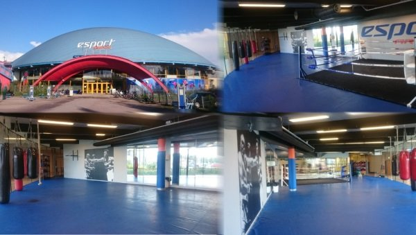

Krav Maga on yksi maailman testatuimmista itsepuolustuslajeista ja sopii juuri sinulle!
Aloita loistava harrastus ja opettele itsepuolustusta — tule mukaan!
Klikkaa haluamaasi riviä (siirtyminen ilmoittautumiseen jäsenpalveluun)
Peruskurssit Kausi-ilmoittautumisetHinta sisältää: Krav Maga -lisenssi (PKMI ja FEKM jäsenyys), Krav Maga -passi (uusille oppilaille).
Huom! Opiskelija-alennus -20 %.Peruskurssi kestää noin kuukauden ja sen päätteeksi harjoittelijat voivat siirtyä turvallisesti aloittelijoiden ryhmään.

Vaihda pukuhuoneessa sisäliikuntakamppeet yllesi, poista korut ja sormukset.
Tule peruskurssin aloituspäivänä noin 20 minuuttia ennen treenien alkamista paikalle, jotta paperityöt saadaan tehtyä ja pääset aloittaamaan treenit ajoissa.
Ota treeneihin mukaan normaali sisäliikuntavarustus ja juomapullo sekä reipasta liikuntahenkeä. Jos haluat käydä treenien jälkeen suihkussa, niin varaa mukaan myös suihkukamppeet - hiki tulee varmasti! Esport Arenalla on erinomaiset pukuhuoneet ja suihkutilat.
Peruskurssilla ei tarvita suojia tai varusteita. Asusteeksi käyvät tavanomaiset sisäliikuntavaatteet. Jalkineiksi käyvät pehmeät sisätossut, esimerkiksi painitossut tai paljasjalkajuoksukengät (ei lenkkitossut tai teräväreunaiset sisäpelikengät). Painitossut eivät sovellu kaikkiin harjoituksiin harjoitusjalkineiksi liian hyvän pidon vuoksi. Liian suuri pito estää tukijalkaa kiertymästä potkuharjoituksissa, jolloin polvi- tai nilkkavammat ovat mahdollisia. Paljain jaloin tai (puhtaat) sukat jalassa on myös mahdollista harjoitella. Alasuojien hankkimista suositellaan mahdollisimman varhaisessa vaiheessa, jopa peruskurssilla.
Peruskurssin jälkeen Krav Maga –harjoituksissa käytetään valkoista virallista harjoituspaitaa ja mustia budohousuja sekä vyöarvoa osoittavaa vyötä (keltaisesta alkaen). Muita yleisesti käytettäviä suojia ovat alasuojat, hammassuojat, säärisuojat, sekä nyrkkeilyhanskat.
Krav Maga sopii kaikille yli 18-vuotiaille naisille ja miehille. Peruskurssille voit osallistua, vaikka et olisi aiemmin harrastanut muita kamppailulajeja ja vaikka pohjakuntosi olisikin rakennettu sohvan ja jääkaapin välisillä spurteilla.
Jos taas olet jo aiemmin harjoitellut jotain kamppailulajeja ja kuntosi on rautaa, niin silloin pääset kehittämään nopeammin teknisiä taitojasi ja itsepuolustuksen harjoittelu voidaan viedä heti vaativammalle tasolle.
Krav Magan harjoittelu edellyttää nuhteettomuutta. Väkivaltarikokseen tai vastaavaan tuomittavaan tekoon syyllistyminen on este kurssille osallistumiselle.
Krav Magan harjoittelun voi aloittaa 18 vuoden iän saavutettuaan.
Krav Maga –harjoituksissa sattuu harvoin loukkaantumisia. Esimerkiksi sparriharjoituksia kovennetaan asteittain hitaasti harjoitusvuosien karttuessa. Tekniikoita harjoitellaan ensin hitaasti lisäten nopeutta ja voimaa vasta sitten, kun harjoittelijat hallitsevat tekniikat.
Tästä huolimatta itsepuolustuslajit kattavaa tapaturmavakuutusta tai sairauskuluvakuutusta suositellaan hankittavaksi ennen harjoittelun aloittamista.
Harjoittelu etenee loogisesti siten, että peruskurssin, keltaisen ja oranssin tason aikana luodaan hyvä pohja tulevalle kehittymiselle. Opetuksessa painotetaan perustaitojen erinomaista hallintaa. Krav Magan perustaitoja ovat liikkuminen, tasapaino, torjunnat, lyönnit ja potkut.
Vihreällä tasolla opittuja perustaitoja harjoitellaan kovemmassa tempossa ja päälle lisätään otteista vapautumisia pystyssä ja maassa ja kehitetään moninkertaisen vastahyökkäyksen hallintaa. Moninkertainen vastahyökkäys tarkoittaa nopeassa tahdissa eri korkeuksille kohdistuvaa vastahyökkäysten sarjaa, jonka avulla puolustautuminen käännetään hyökkäämiseksi ja aloite tilanteessa siirretään hyökkääjältä itselle.
Sinisellä tasolla painotetaan puolustautumista teräaseita ja lyömäaseita vastaan sekä heittoja ja pyyhkäisyitä. Lisäksi tällä tasolla harjoitellaan tekemään aikaisemmin opitut torjunnat penkillä istuen. Terä- ja lyömäaseita vastaan toimimista harjoitellaan melko paljon jo aikaisemminkin, mutta sinisellä tasolla niihin keskitytään erityisesti.
Ruskealla tasolla uutena asiana tulevat aseuhkatekniikat pistoolia vastaan. Lisäksi tällä tasolla harjoitellaan tekemään aikaisemmin opitut torjunnat maassa istuen tai maaten. Ruskealla tasolla harjoitellaan myös hyppypotkuja sekä potkuyhdistelmiä.
Musta 1.dan kokoaa kaiken siihen asti opitun yhteen niin, että kaikki tekniikat on hallittava täydellä nopeudella tilanteissa, joissa ei ole etukäteen tiedossa mikä hyökkäys on tulossa.
Krav Maga rakentuu muutamalle yksinkertaiselle ja käytännölliselle periaatteelle.
Uhkaa pyritään ensisijaisesti välttämään – tarvittaessa myös puhumalla.
Tekniikat hyödyntävät ihmiskehon luontaisia refleksejä.
Vastahyökkäykset kohdistetaan ihmiskehon arkoihin paikkoihin.
Puolustuksesta siirrytään hyökkäykseen mahdollisimman nopeasti – torjunnat ja vastahyökkäykset tehdään aina lyhyintä tietä.
Minkä tahansa saatavilla olevan apuvälineen hyödyntäminen on sallittua.
Itsepuolustustilanteessa ei ole sääntöjä.
Krav Maga on israelilainen lähitaistelu- ja itsepuolustusjärjestelmä